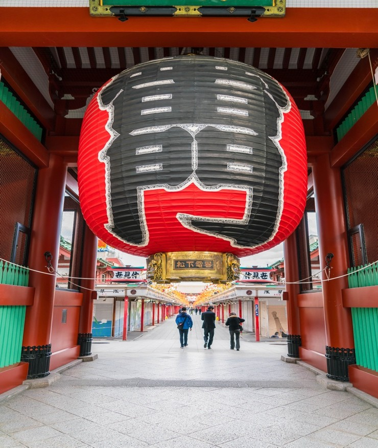
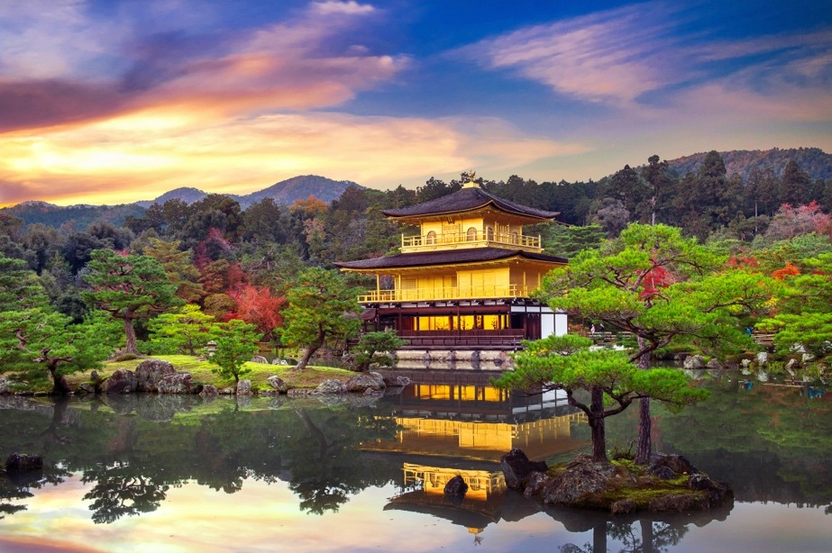
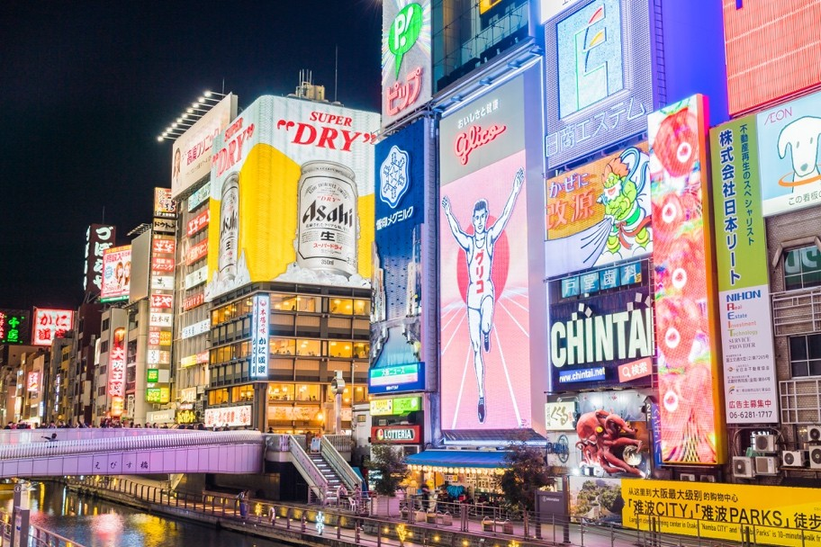
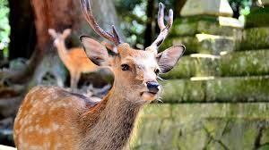
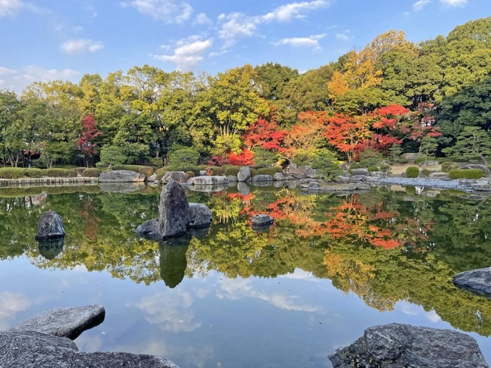
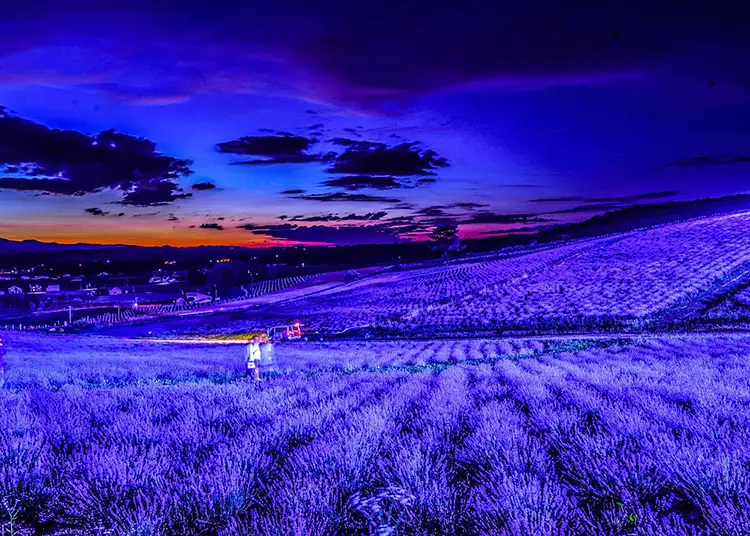
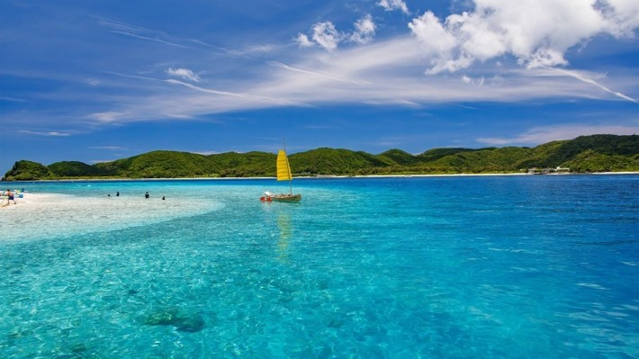

Explore Japan
Tokyo

The pulsating heart of Japan, where futuristic skyscrapers stand alongside ancient shrines.
- Shibuya Crossing
- Senso-ji Temple (Asakusa)
- Shinjuku Gyoen National Garden
Kyoto

The cultural soul of the nation, famous for its thousands of classical Buddhist temples and exquisite gardens.
- Fushimi Inari Shrine
- Kinkaku-ji (Golden Pavilion)
- Gion District
Osaka

Known for its outgoing people and incredible street food, Osaka is a city of bright lights and hearty appetites.
- Osaka Castle
- Dotonbori District
- Universal Studios Japan
Nara

As Japan’s first permanent capital, Nara is a peaceful city where friendly deer roam free among ancient, massive wooden temples.
- Todai-ji Temple (Great Buddha)
- Nara Park (Deer Park)
- Kasuga Taisha Shrine
Fukuoka

A vibrant coastal city famous for its warm hospitality, modern shopping malls, and world-class Hakata Ramen stalls (Yatai).
- Ohori Park
- Canal City Hakata
- Dazaifu Tenmangu Shrine
Hokkaido

Japan’s northernmost island, offering vast wilderness, snowy mountains for skiing, and the freshest seafood in the country.
- Odori Park (Sapporo)
- Otaru Canal
- Daisetsuzan National Park.
Okinawa

A chain of islands with a unique Ryukyu culture, crystal clear turquoise waters, and white sandy beaches.
- Churaumi Aquarium
- Shuri Castle
- Miyako Island Beaches